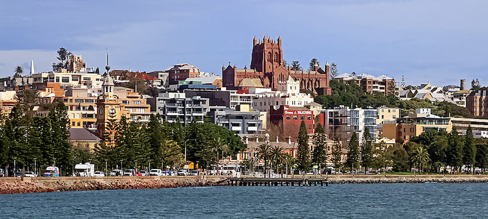

Newcastle, Australia is the city I was born in, and the city I grew up in. Although I no longer live in Newcastle, it will always be my favorite city. I love the beaches, the people and the lifestyle. The image below, shows a view of the CBD from the port of Newcastle on the Hunter River.

Whenever I get the chance, I go back to Newcastle to see my family and friends. My favorite football team, the Newcastle Knights are based in Newcastle, and this year they made it all the way to the NRL Grand Final (equivalent of the Super Bowl in the NFL). Unfortunately they lost, but I am very proud of them, considering they finished in last place the season before.